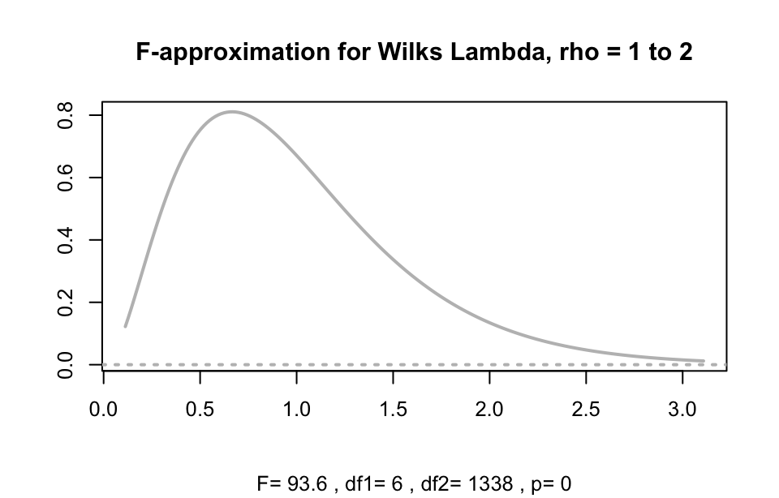
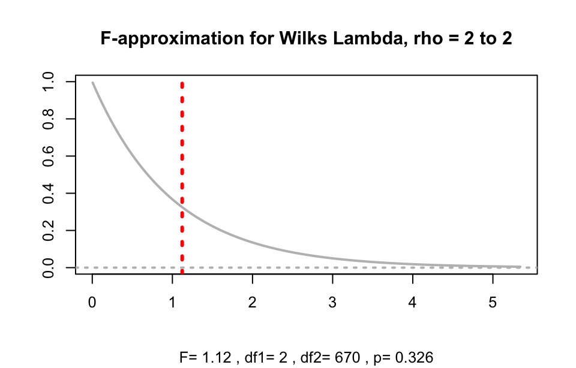
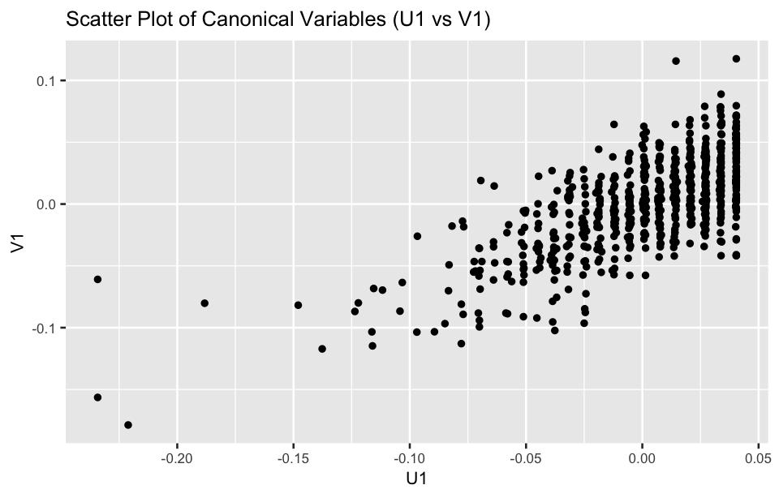
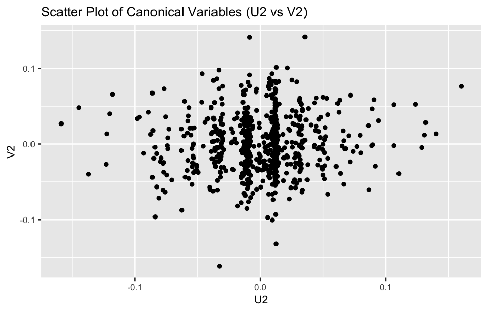

library(tidyverse)
library(ggplot2)
library(CCP)25 Canonical correlation analysis
Canonical correlation analysis (CCA) is a multivariate statistical technique used to explore the relationship between two sets of variables. It examines the linear relationships between two datasets and finds pairs of canonical variables—linear combinations of the original variables—that have maximum correlation with each other.
25.1 Prerequisite
25.2 Key concepts
25.2.1 Canonical variables
Let \mathbf X be a n \times p matrix representing the first set of variables X_1, X_2, \dots, X_p, and \mathbf Y be a n \times q matrix representing the second set of variables Y_1, Y_2, \dots, Y_q. The canonical variables are linear combinations of the original variables in both sets. For example:
U_1 = \mathbf a_1 X_1 + \mathbf a_2 X_2 + \dots + \mathbf a_p X_p
V_1 = \mathbf b_1 Y_1 + \mathbf b_2 Y_2 + \dots + \mathbf b_q Y_q
The coefficients \mathbf a_1, \mathbf a_2, \dots, \mathbf a_p and \mathbf b_1, \mathbf b_2, \dots, \mathbf b_q are chosen to maximize the correlation between U_1 and V_1 , the first pair of canonical variables. The first pair of U_1 and V_1 explains the most variance, followed by subsequent pairs U_2 and V_2, and so on, which are orthogonal to the first pair.
25.2.2 Canonical coefficients
Canonical coefficients are the weights used to linearly combine the original variables \mathbf X and \mathbf Y into the canonical variables \mathbf U = \mathbf X \cdot \mathbf A and \mathbf V = \mathbf Y \cdot \mathbf B. They are obtained by solving an optimization problem that maximizes the correlation between \mathbf U and \mathbf V.
25.2.3 Canonical loadings
Canonical loadings (also known as structure coefficients) are the correlations between the original variables and their corresponding canonical variables. They show how strongly each original variable contributes to the canonical variables. In other words, canonical loadings help us understand which original variables are most strongly related to the canonical variates .
Each set of variables (say, \mathbf X and \mathbf Y) has its own canonical loadings for each canonical variable. Canonical loadings reveal how much weight each original variable carries in the overall relationship between the two sets of variables.
Mathematically, the canonical loading of a variable X_i is \text{cor}(X_i, U) , and for a variable Y_j, it is \text{cor}(Y_j, V).
25.2.4 Canonical correlation
The correlation between the canonical variables U_1 and V_1 is called the canonical correlation. CCA will provide several canonical correlations, corresponding to the number of canonical variable pairs extracted. The first canonical correlation represents the strongest relationship between the two sets of variables. The subsequent canonical correlations show relationships that are independent of the first and represent additional layers of shared variation between the two datasets.
25.2.5 Canonical correlation coefficients
Canonical correlation coefficient measure the correlation between a pair of canonical variables U_i and V_i. Each canonical correlation coefficient corresponds to a pair of canonical variables, with the first canonical correlation being the strongest, followed by the second, and so on. These coefficients are similar to regular correlation coefficients, but they represent the correlation between combinations of variables rather than individual variables.
25.3 Steps of CCA
The general steps for conducting CCA are as follows:
25.3.1 Data Preparation
First, identify the two sets of variables, for instance \mathbf X and \mathbf Y. The number of variables in each set can be different. Inspect the data for missing values or outliers and handle them appropriately. Standardization or normalization is recommended if the two sets of variables have different units or scales.
25.3.2 Construct covariance matrices
Compute the covariance matrices for the two sets of variables. CCA relies on the covariance matrices to determine the linear relationships between the two sets.
25.3.3 Derive canonical variables
The goal of CCA is to find matrices \mathbf A and \mathbf B such that the correlation between \mathbf U = \mathbf X \cdot \mathbf A and \mathbf V = \mathbf Y \cdot \mathbf B is maximized. This involves solving the following maximization problem:
\max \; \text{corr}(\mathbf U, \mathbf V) = \max \; \frac{\text{cov}(\mathbf U, \mathbf V)}{\sqrt{\text{var}(\mathbf U) \cdot \text{var}(\mathbf V)}}
where \mathbf U and \mathbf V are the canonical variables, i.e., linear combinations \mathbf U = \mathbf X \cdot \mathbf A and \mathbf V = \mathbf Y \cdot \mathbf B.
After obtaining the canonical variables, compute the canonical correlation coefficient, which measures the correlation between the two canonical variables.
25.3.4 Significance test
Perform significance test using statistical methods such as the chi-square test or Wilks’ Lambda to evaluate whether the canonical correlation is significant and meaningful. Based on the significance level, determine how many pairs of canonical variables should be retained for further interpretation.
25.3.5 Interpret canonical variables
The higher the canonical correlation coefficient, the stronger the linear relationship between the two sets of variables. Each pair of canonical variables should be interpreted in terms of their real-world meaning. Canonical loadings indicate how much each original variable contributes to the canonical variables. These loadings help understand which variables in the original sets drive the correlation.
25.3.6 Report results
Summarize the analysis, including the canonical correlation coefficients, significance tests, and canonical loadings, and discuss their relevance to the research.
25.3.7 Visualization (optional)
Use graphical representations, such as scatter plots of the canonical variables, to visually explore the relationships between the two sets of variables.
Example 1:
In order to explore the relationship between mental health and well-being, a university conducted a survey on the mental health and subjective well-being of first-year students. Performed canonical correlation analysis on the data of 674 students, focusing on three mental health indicators (depression score, anxiety score, and stress score) and two subjective well-being indicators (life attitude score and emotional state score).
df <- read_csv("datasets/ex25-01.csv", show_col_types = F)
X <- select(df, 1:3) |> scale()
Y <- select(df, 4:5) |> scale()The cancor() function can be used to perform canonical correlation analysis. Here’s an example:
res.cc <- cancor(X, Y)
res.cc#> $cor
#> [1] 0.70874979 0.05777605
#>
#> $xcoef
#> [,1] [,2] [,3]
#> DEPRES -0.0184807659 0.056669704 -0.03975040
#> ANIETY -0.0007031538 -0.064838367 -0.04134194
#> PRESSUR -0.0213237972 0.002855532 0.07657176
#>
#> $ycoef
#> [,1] [,2]
#> ALTITUD 0.001226327 -0.04739979
#> EMOTE 0.037820164 0.02859859
#>
#> $xcenter
#> DEPRES ANIETY PRESSUR
#> 7.560718e-17 -1.948656e-16 1.004801e-17
#>
#> $ycenter
#> ALTITUD EMOTE
#> -3.750709e-16 -2.223740e-16# Extract canonical variables
U <- scale(X) %*% res.cc$xcoef
V <- scale(Y) %*% res.cc$ycoef CCA result
- The first canonical correlation is 0.7087, meaning there is a moderately strong relationship between the first pair of canonical variables.
- The second canonical correlation is 0.0578, indicating a very weak or almost negligible relationship between the second pair of canonical variables.
The p.asym() function from CCP packages can be used to test significance in canonical correlation analysis.
res.test <- pluck(res.cc, "cor") |>
p.asym(nrow(X), ncol(X), ncol(Y), tstat = "Wilks")#> Wilks' Lambda, using F-approximation (Rao's F):
#> stat approx df1 df2 p.value
#> 1 to 2: 0.4960125 93.634745 6 1338 0.0000000
#> 2 to 2: 0.9966619 1.121999 2 670 0.3262391Significance test result
- The first canonical correlation is significant, as indicated by the small Wilks’ Lambda and p-value less than 0.001.
- The second canonical correlation is not significant, as shown by the large Wilks’ Lambda and p-value greater than 0.05. Therefore, only the first canonical variate pair shows a strong relationship between the two sets of variables.
Use the plt.asym() function to plot asymptotic distributions used to test the statistical significance of canonical correlation coefficients.
par(cex = 0.8)
plt.asym(res.test, rhostart = 1)
plt.asym(res.test, rhostart = 2)

Use scatter plots of the canonical variables to visually explore the relationships between two sets of variables.
U <- scale(X) %*% res.cc$xcoef # Canonical variables for X
V <- scale(Y) %*% res.cc$ycoef # Canonical variables for Y
data <- data.frame(U1 = U[, 1], U2 = U[, 2], V1 = V[, 1], V2 = V[, 2])
ggplot(data, aes(x = U1, y = V1)) +
geom_point(size = 1) +
labs(title = "Scatter Plot of Canonical Variables (U1 vs V1)",
x = "U1", y = "V1") +
theme(text = element_text(size = 8))
ggplot(data, aes(x = U2, y = V2)) +
geom_point(size = 1) +
labs(title = "Scatter Plot of Canonical Variables (U2 vs V2)",
x = "U2", y = "V2") +
theme(text = element_text(size = 8))
